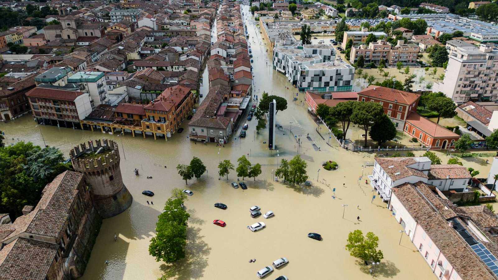

Pacora
99°C
Noticias SA Nacional
Lunes
21.05.2023

Nueva se hunde por el peso de los edificios
Las sanciones contra Rusia golpean a su industria de diamantes
Noticias internacionales más relevantes
Nueva se hunde por el peso de los edificios
La ciudad se hunde aproximadamente entre uno y dos milímetros de media al año, lo que agrava los efectos de la subida del nivel del mar y la amenaza de inundaciones

El mal tiempo preocupa a Italia tras inundaciones en Emilia Romagna
El mal tiempo preocupa a Italia tras inundaciones en Emilia Romagna
¿Son las inundaciones y los deslizamientos de tierra en Italia producto de la crisis climática?
Las sanciones contra Rusia golpean a su industria de diamantes
Sanciones golpean a industria de diamantes rusos: Reino Unido y Unión Europea bloquearán importaciones